Overview
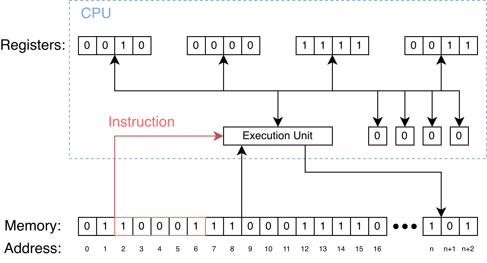
When an x86-64 program is executed, the CPU fetches an instruction from memory, decodes it, and performs the specified operation. For example, it may read values from two registers, add them together, and write the result back to a register or a memory location. It then fetches the next instruction and repeats this process continuously until the program terminates.
As the diagram shows, everything stored in memory or registers is composed of a sequence of bits. Each bit has exactly one value:s either 0 or 1. To locate an instruction or a piece of data, it is necessary to know its starting position, known as an address, and its length.
There is no inherent difference between an instruction and data stored in memory. The distinction depends on the context. If the CPU interprets a sequence of bits as data, then it is data; if the CPU interprets the same bits as an instruction, then it is an instruction. As CS:APP says, information is bits + context.
IP：Instruction Pointer
We already know that whether a sequence of bits is interpreted as an instruction or as data depends on the context. But what exactly is this context? In x86, one key part of the answer is a special register called the Instruction Pointer (IP), which is also known as the Program Counter (PC).
The IP holds the address of the first byte of the next instruction to be executed. Since x86 instructions can have different lengths, the CPU must decode each instruction to determine where it ends and where the next one begins.
Once the current instruction has been executed, the CPU uses the instruction pointer to locate the next instruction. The IP is then updated to reflect the next execution address, allowing the CPU to continue executing the program one instruction at a time.
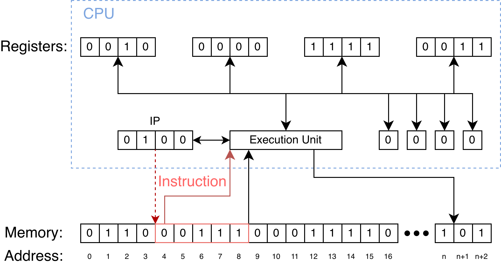
At this point, it may seem that the CPU can only execute instructions sequentially, one after another. But that would be too limiting. There must be a way to make the IP point to an address other than that of the next sequential instruction.
In fact, some instructions can modify the IP to change the flow of execution. These instructions allow the CPU to jump to a different location in the program, deciding what to execute next. This is the basis of conditional branching, loops, and function calls.
After all, the IP is a register, and its value can be changed by some instructions—not just advanced to the next instruction.
Byte: The Real Unit of Addressing
Actually, we don’t use the bit as the unit of addressing. It’s too fine-grained: addresses would need very large numbers. Instead, we use the byte, a group of 8 bits. This way, a much smaller address can cover the same amount of memory.
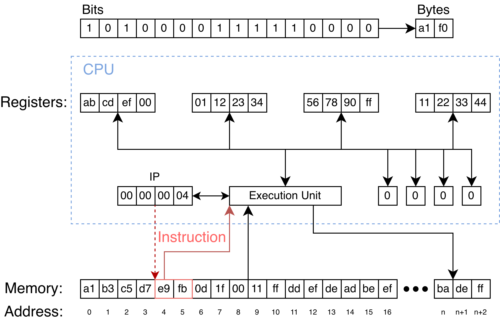
Assembly Syntax I: Basic Operand Types
Now that we know a machine has an execution unit, memory, and a set of registers (one of which holds the address of the next instruction), it’s time to learn how to refer to these things in assembly code.
Immediate Values
An immediate is a constant value encoded directly in an instruction, rather than a value that the instruction must retrieve from a register or a separate memory location. Examples include the numbers 1, 2, and 3.
In assembly syntax, an immediate value is prefixed with
$. For example, to represent the immediate
value 1, we write $1.
Registers
Each register has a name, which we can use to refer to it
in assembly code. Register names are prefixed with
%. For example, %rax refers to the
64-bit RAX register.
See Appendix: Registers.
Memory Address
A common form of a memory address syntax is:
Imm(%b, %i, s). Where:
Immis an optional immediate displacement, specified without the$prefix.%bis an optional register that holds a base address, known as the base register.%iis an optional register that holds an index value, known as the index register.sis an optional scale factor that can be1,2,4, or8. It determines the multiplier applied to the index value.
Each component is optional, although the scale factor is meaningful only when an index register is specified.
The effective memory address is calculated as:
Imm + %b + %i * s.
Any omitted component is treated as zero, except that an
omitted scale factor defaults to 1 when an
index register is present.
Assembly Syntax II: Set Data
Now we have the core components: the CPU, the registers, and the memory. We already know how to represent them, so it’s time to manipulate the data.
General-Purpose Registers
Unlike the IP, which can only be set by special
instructions (such as jmp, call
and ret), some registers are designed for
general-purpose use. They include ax,
bx, cx, dx,
di, si, sp,
bp, and r8–r15. See
Appendix: General-Purpose Registers.
Move Instructions
A move instruction has the general form
MOV S, D, where S stands for
“Source”, which can be an immediate, a memory address, or a
register, and D stands for “Destination”, which
can be a memory address or a register. A move instruction
copies data from the source to the destination. When the
source is a memory address, the destination can only be a
register. Thus, we can’t move data directly between two
memory addresses.
For example, to load the register ax with
the value stored at the address 19, we can
write:
movq 19, %raxHere, the movq instruction has a suffix
-q and the register ax has a
prefix r-. Both indicate that the operation
works on 64-bit values.
See Appendix: Instruction
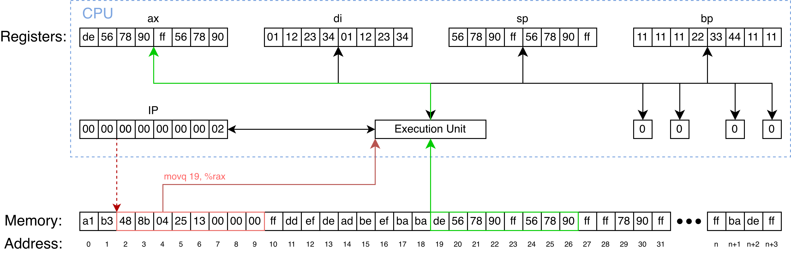
Assembly Syntax III: Compute Data
Arithmetic Instructions
Now we know how to move data between registers and memory. It's time to compute with it.
Arithmetic instructions operate on one or two operands and store the result in the destination. For example, `ADD S, D` adds `S` to `D` and stores the sum in `D`, overwriting its previous value.addq %rax, %rdiFlag Registers
There are 4 special registers: ZF,
SF, OF, CF, which
designed to represent the status of last operation. Almost
all of the arithmetic instructions will set those
registers.
| Name | Meaning | Condition |
|---|---|---|
| ZF | Zero Flag | Yielded 0 |
| SF | Sign Flag | Yielded negative |
| OF | Overflow Flag | Overflow for signed |
| CF | Carry Flag | Overflow for unsigned |
For example, when adding two 4bit numbers:
0111 + 0001 = 1000The result is not 0, so ZF is
set to 0. If the result is treated as a signed
number, it is negative and a signed overflow has occurred,
so SF and OF are set to
1. If the result is treated as an unsigned
number, there is no carry out of the most significant bit,
so CF is set to 0.
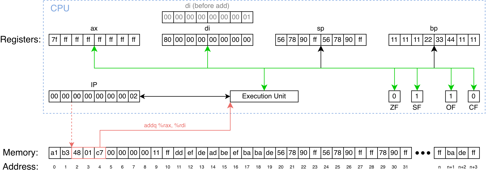
Assembly Syntax IV: Control Flow
We can combine the condition flags to test whether the result of the previous instruction satisfies a condition, which lets us implement control flow.
Compare
Two instructions set the flags without modifying any register:
CMP S1, S2 # Set the flags according to S2 - S1.
TEST S1, S2 # Set the flags according to S1 & S2. (Usually used as `TEST S1, S1` to check whether S1 is 0.)Jump
Now we can change which instruction executes next by setting the IP with a jump instruction. There are three kinds:
jmp .LABEL # unconditional jump to LABEL.
jmp *Operand # Operand: register or memory address. Unconditional jump to the address stored in the operand.
jCC .LABEL # jump to LABEL if the condition given by the suffix CC is satisfied.
.LABEL: # marks the next instruction; defined as `.<name>:`. The assembler replaces it with that instruction's address.For example, jump if the value of %rax is
equals the value of %rbx:
cmpq %rax, %rbx
je .Label
<some instructions>
.Label:
<some instructions>Here are the suffixs used by the conditional jump instructions:
| Suffix | Condition | Description |
|---|---|---|
| e | ZF | Equal |
| ne | ~ZF | Not Equal |
| s | SF | Negative |
| ns | ~SF | Nonnegative |
| g | ~(SF^OF) & ~ZF | Greater |
| ge | ~(SF^OF) | Greater or equal |
| l | SF^OF | Less |
| le | (SF^OF) | ZF | Less or equal |
| a | ~CF & ~ZF | Above |
| ae | ~CF | Above or equal |
| b | CF | Below |
| be | CF | ZF | Below or equal |
Assembly Syntax V: Procedures
SP & BP: Run-Time Stack
A program may need to handle far more data than the
number of registers can hold. A technique called the runtime
stack was designed to solve this problem. It uses two
registers, sp and bp, to mark the
two ends of a region of memory (the current stack frame),
and the memory between them is used to store data.
Two instructions to save/take values to the stack:
pushq S # %rsp <- %rsp - 8, (%rsp) <- S
S: {Imm, Reg}
popq D # D <- (%rsp), %rsp <- %rsp + 8
D: {Reg}Note that the stack is located at high addresses and
grows downward: pushing data decreases the value of
sp, and popping data increases it.
Here is a typical procedure:
push %rbp
movq %rsp, %rbp # Save the origin address of sp to the bp
subq 20, %rsp # Allocate 20 bytes for the stack
<some sintructions>
movq %rbp, %rsp # Free the stack by setting the sp to it's origin address
pop %rbpStep-by-Step Diagrams: Lifecycle of a Stack Frame
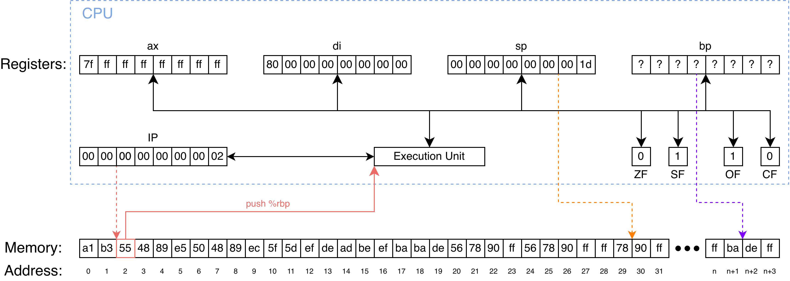
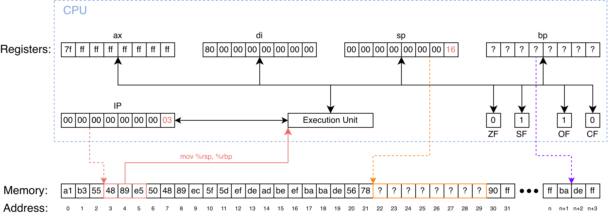
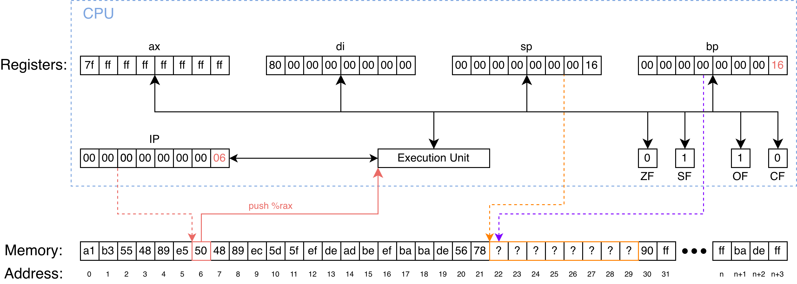
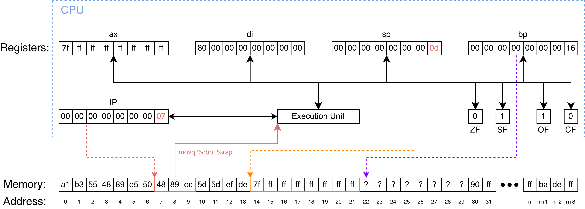
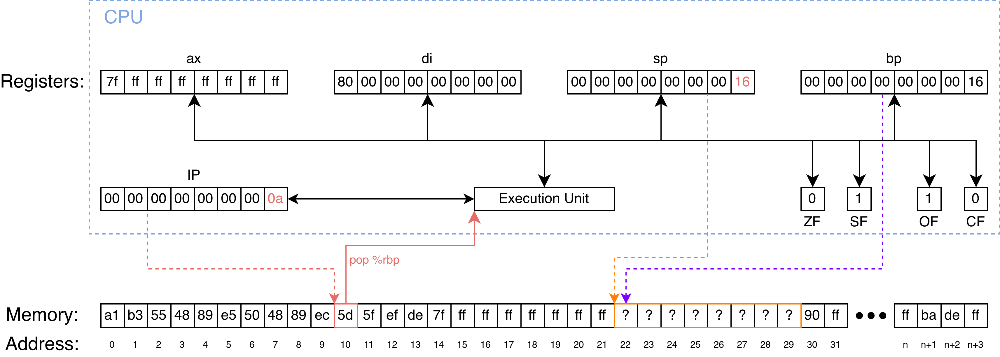
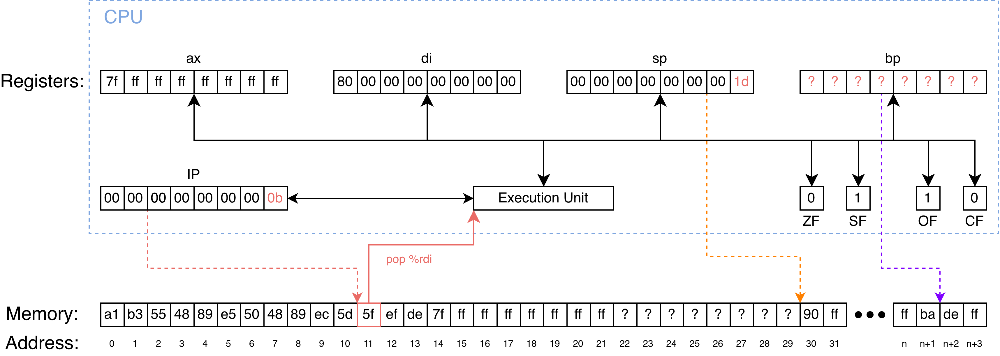
Function Call
What needs to happen when a function is called? First, the next instruction must be set to the first instruction of the callee. Second, some arguments may need to be passed to the callee. Finally, when the callee is done, execution must resume at the instruction right after the call site, possibly with a return value.
Calling and Return
Two instructions handle function calls, giving us the ability to jump to the callee and return to the right place afterwards:
call Label # Procedure call: push the return address and jump to the Label
call *Operand # Procedure call: push the return address and jump to the indirect address
ret # Return from call: pop the address to the PCThe callee places the return value, if any, in
ax.
Passing Arguments
The first six arguments are passed in these registers, in
order: di, si, dx,
cx, r8, and r9. Any
further arguments are passed on the stack.
Callee-Saved Registers
Some registers are designated as callee-saved, which
means the callee must preserve their values: when the
function returns, they must hold the same values as when it
was called. Therefore, a function that wants to use a
callee-saved register must first save its value (for
example, with push) and restore it (with
pop) before returning.
Local Variables
A function may store local variables on the stack, so its frame contains a region for them, located between the saved callee-saved registers and the outgoing arguments area used for the next function call.
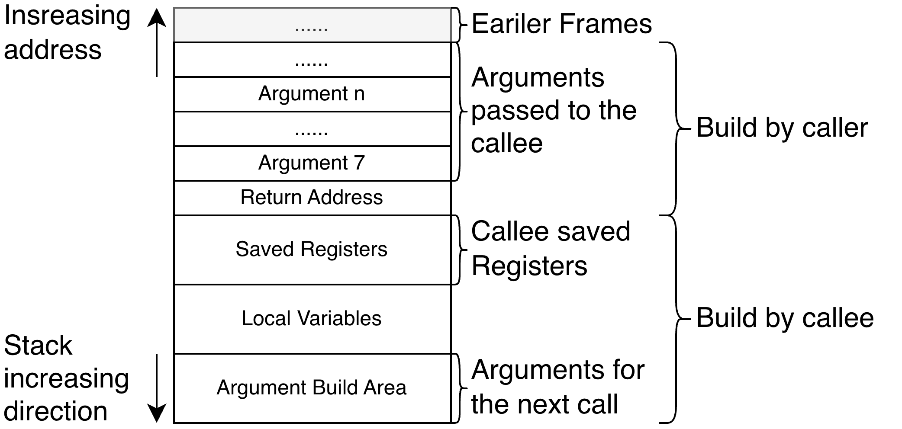
Step-by-Step Diagrams: Calling a Function and Returning Immediately
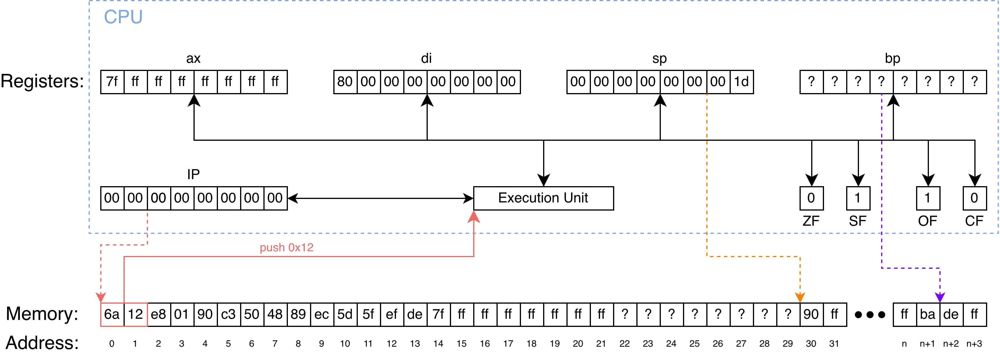
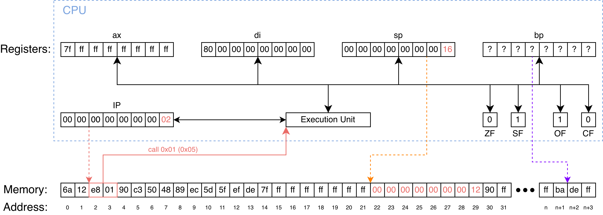
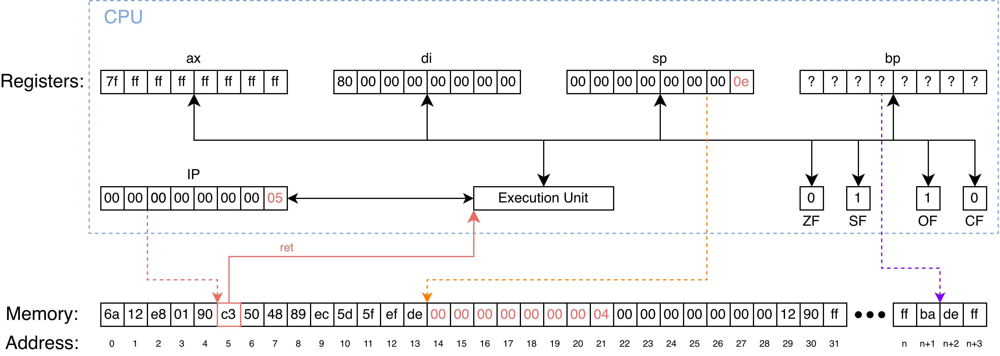
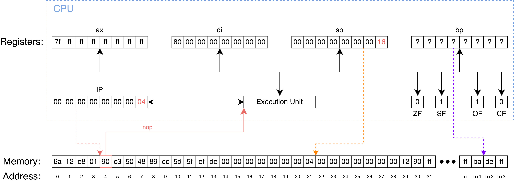
Appendix: General-Purpose Registers
Legacy Registers
r- e- - -l <- prefix/suffix
┌────────────────┬────────┬────┬────┐
│%rax │%eax │%ax │%al │
└────────────────┴────────┴────┴────┘
8 4 2 1 <- size(byte)| Name | Usage | Name | Usage |
|---|---|---|---|
| ax | return value | di | 1st argument |
| sp | stack pointers | si | 2nd argument |
| bp | base point/callee saved | dx | 3rd argument |
| bx | callee saved | cx | 4th argument |
Modern Registers
\- -d -w -b <- suffix
┌────────────────┬────────┬────┬────┐
│%r8 │%r8d │%r8w│%r8b│
└────────────────┴────────┴────┴────┘
8 4 2 1 <- size(byte)| Name | Usage | Name | Usage |
|---|---|---|---|
| r8 | 5th argument | r12 | callee saved |
| r9 | 6th argument | r13 | callee saved |
| r10 | r14 | callee saved | |
| r11 | r15 | callee saved |
Condition Registers
| Name | Meaning | Condition |
|---|---|---|
| ZF | Zero Flag | Yielded 0 |
| SF | Sign Flag | Yielded negative |
| OF | Overflow Flag | Overflow for signed |
| CF | Carry Flag | Carry out of the sign bit Overflow for unsigned |
Appendix: Instructions
Suffixs: 8byte: quote, 4byte: long, 2byte: word, 1byte: byte
Move
Using for referencing and dereferencing.
| Instruction | Effect | Operands | Suffixes |
|---|---|---|---|
| MOV S,D | D <- S | S: Imm, Reg, Mem; D: Reg, Mem | movb, movw, movl, movq |
| movabsq I,R | R <- I | I: Imm; R: Reg | — |
| MOVZ S,R | R <- ZeroExtend(S) | S: Reg, Mem; R: Reg | movzbw, movzbl, movzbq, movzwl, movzwq |
| MOVS S,R | R <- SignExtend(S) | S: Reg, Mem; R: Reg | movsbw, movsbl, movsbq, movswl, movswq, movslq |
| cltq | %rax <- SignExtend(%eax) | none | — |
- MOV cannot go Mem -> Mem.
- movl sets the higher 4 bytes to 0, which is why there is no movzlq.
- movq takes only a 32-bit source immediate and fills the higher 4 bytes with its sign bit; movabsq is the form that takes a full 64-bit immediate, and its destination must be a register.
- cltq means Convert Long To Quad; it takes no operand, the source and the destination are always %eax and %rax.
Stack
A stack grows toward the lower addresses, and %rsp always holds the address of the top element.
| Instruction | Effect | Operands |
|---|---|---|
| pushq S | %rsp <- %rsp - 8, then (%rsp) <- S | S: Imm, Reg |
| popq D | D <- (%rsp), then %rsp <- %rsp + 8 | D: Reg |
Load Effective Address
Get the address itself instead the value stored in that address.
| Instruction | Effect | Operands | Notes |
|---|---|---|---|
| leaq S,D | D <- &S | S: Mem; D: Reg | Will not set the condition flags |
Unary Operations
| Instruction | Effect | Operands | Flags |
|---|---|---|---|
| INC D | D <- D + 1 | D: Reg, Mem | OF, ZF (will not set the CF) |
| DEC D | D <- D - 1 | D: Reg, Mem | OF, ZF (will not set the CF) |
| NEG D | D <- -D | D: Reg, Mem | |
| NOT D | D <- ~D | D: Reg, Mem | CF:0, OF:0 |
Binary Operations
All take S: {Imm, Reg, Mem} and D: {Reg, Mem}.
| Instruction | Effect | Flags |
|---|---|---|
| ADD S,D | D <- D + S | |
| SUB S,D | D <- D - S | |
| IMUL S,D | D <- D * S | |
| XOR S,D | D <- D ^ S | CF:0, OF:0 |
| OR S,D | D <- D | S | CF:0, OF:0 |
| AND S,D | D <- D & S | CF:0, OF:0 |
Shift Operations
For a w bits long data, the shift amount is the value of the low-order m bits of %cl, where 2^m = w. In other words, it will not shift over the data’s length. All take k: {Imm, %cl} and D: {Reg, Mem}, and set OF:0 and CF to the last bit shifted out.
| Instruction | Effect |
|---|---|
| SAL k,D | D <- D << k |
| SHL k,D | D <- D << k |
| SAR k,D | D <- D >> k, arithmetic |
| SHR k,D | D <- D >> k, logical |
Full Multiply & Divide
These instructions take a single operand S: {Reg, Mem} (except cqto, which takes none); the other operand and the destination are always %rax, or the 128-bits pair %rdx:%rax.
| Instruction | Effect | Notes |
|---|---|---|
| imulq S | %rdx:%rax <- S * %rax | Signed full multiply |
| mulq S | %rdx:%rax <- S * %rax | Unsigned full multiply |
| cqto | %rdx:%rax <- SignExtend(%rax) | Convert Quad to Octword; prepares the 128-bits dividend for idivq |
| idivq S | %rdx <- %rdx:%rax mod S, %rax <- %rdx:%rax / S | Signed divide |
| divq S | %rdx <- %rdx:%rax mod S, %rax <- %rdx:%rax / S | Unsigned divide |
Compare
Using for setting the condition flags without touching the operands. Both take S1, S2: {Imm, Reg, Mem}.
| Instruction | Effect | Suffixes |
|---|---|---|
| CMP S1,S2 | Set the condition flags as SUB but not change the destination | cmpb, cmpw, cmpl, cmpq |
| TEST S1,S2 | Set the condition flags as AND but not change the destination | testb, testw, testl, testq |
Control
Using for reading the condition flags and changing the flow of execution. The suffix of these instructions selects the condition; see the suffix table in Assembly Syntax IV: Control Flow.
| Instruction | Effect | Operands | Notes |
|---|---|---|---|
| SET D | D <- result based on the suffix and the condition flags | D: low-order single byte of Reg, or single byte of Mem | |
| jmp Label | Direct jump | — | No condition |
| jmp *Operand | Jump to the address saved in the operand | Operand: Reg, Mem | Indirect, no condition |
| J Label | Conditional jump | — | Condition depends on the suffix |
| CMOV S,R | R <- condition ? S : R | S: Reg, Mem; R: Reg | Condition depends on the suffix |